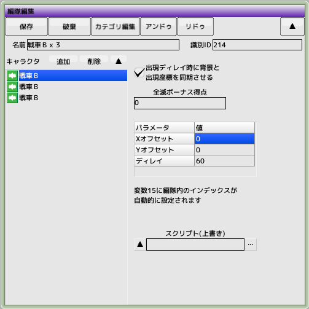

■元のページへ戻る
■元のページへ戻る

- スクリプト
キャラクタに登録してあるスクリプトよりこちらが優先されます。省略可能
- XYオフセット
各キャラクタの出現位置を相対座標で設定します
- ディレイ
そのキャラクタが出現してから次のキャラクタが出現するまでの時間をフレーム単位で設定します
- 全滅ボーナス得点
編隊すべてを破壊した時に加算される得点
- 出現ディレイ時に背景と出現座標を同期する
背景に同期する地上物の時はチェックするといいかもしれません
- スクリプト（上書き）
キャラクタ編集で設定したスクリプトに変わって上書きされます
- 変数15
編隊として出現する時に、変数15に0から順に+1された値が設定されます
■ページ上部へ戻る